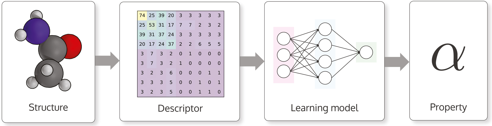
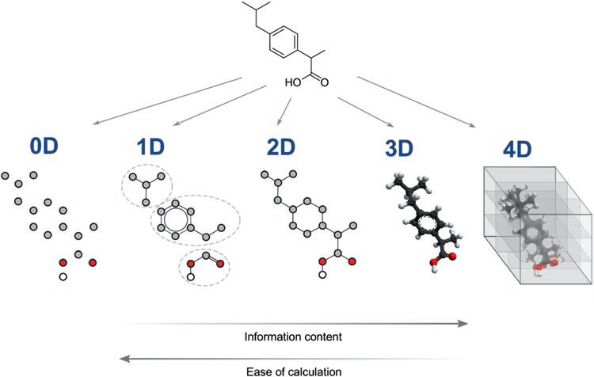

文章链接：Machine learning descriptors for molecules
在预测分子性质时，分子结构在被用来训练机器学习模型之前被转换成描述符(descriptors)。

本文的目的是概述分子描述符，并讨论三个主要问题:
适用于机器学习的描述符有哪些特点？
选用一个满足以下三个标准的描述符来编码你的分子：
- 描述符应与将要预测的分子性质有较高的相关性；
- 对应不同的分子结构，描述符应有有所差异；
- 根据分子大小选用合适的描述符(不是所有的描述符都适合所有大小的分子)。
针对具体的机器学习任务，描述符还需要遵循其他一些标准，例如：
- 能区分同分异构体；
- 可解码(从描述符返回到分子结构)；
- 数据量与描述符的维度(通常，数据集中的分子数量应远大于描述符的维数)。
描述符有哪些类型？
分子描述符分为两类：实验性的描述符和理论性的描述符。
- 实验性的描述符(Experimental)
实验测量或理论计算得到的物理化学性质。 - 理论性的描述符(Theoretical)
来自于分子的符号表示。根据”维度“又可分为以下五类:- 0维(0D)描述符
- 不提供任何有关分子结构或原子连通性信息的分子描述符。
- 例如，原子数、键数或分子量都是0D描述符。
- 它们的优点是很容易获得，但要与其他描述符组合使用；
- 1维(1D)描述符
- 由一组子结构(如官能团)计算得到的描述符。
- 其优点也是容易获得。
- 分子指纹就是一类最常见的1D描述符。
- 2维(2D)描述符
- 通过分子的图表示(graph representation)获得分子拓扑信息的描述符。
- 典型的2D描述符是
邻接矩阵(Adjacency matrix)，
库仑矩阵(Coulomb matrix)和
距离矩阵(Distance matrix)。 - 由于2D描述符对分子的结构特征(大小、形状和对称性)很敏感，因此它们是常用的一类描述符。
- 3维(3D)描述符
- 提供有关分子原子空间坐标信息的几何描述符。
- 最著名的3D描述符是
分子矩阵(Molecular matrix)和
3D-MoRSE描述符。 - 由于几何描述符的复杂性，其计算十分耗时。
- 4维(4D)描述符：
- 也被称为“基于网格的描述符”。这类描述符除了分子几何外，还引入了第四维空间。
- 这个新维度通常表征分子与受体活性位点之间的相互作用或分子的多重构象状态。
- 常用的4D描述符有CoMFA和GRID。
- 一个优点是，它们提供了比其他描述符更多的信息，并且总是能够为结构不同的分子生成不同的值。
- 然而，如同3D描述符一样，4D描述符因其高复杂性而难以获得。
- 0维(0D)描述符

如何选择描述符(组合)？
- 从海量描述符中选择合适的描述符(组合)是一项非常困难的任务。
- 主要有两种选择策略：穷举搜索和优化算法。
- 穷举搜索(Exhaustive search)
- 也就是全子集模型(All Subset Model, ASM)。
- N个描述符就有2N-1种组合。
- 此策略理论上能找到最优的描述符组合，但描述符数量过大时极为消耗算力，
- 比较适合只考虑少量描述符的情况。
- 优化算法(Optimization algorithms)
- 是通过迭代方法找出能使预测模型结果最优的描述符组合。
- 比较常用的算法有
进化规划(Evolutionary Programming，EP)，
蚁群优化(Ant Colony Optimization，ACO)，
顺序查找(Sequential Search，SS)和
遗传算法(Genetic Algorithms，GAs)。 - 一般的优化流程如下图所示：
- 穷举搜索(Exhaustive search)
总结
- 分子用描述符表示后，可作为机器学习模型的特征输入。
- 描述符的选择很重要，因为它对模型的预测性能有很大的影响。
- 在选择描述符时，有四个关注点：
- 描述符与预测性质之间的相关性
- 描述符为结构不同的分子生成不同值的能力
- 描述符的维数
- 可用的数据量
- 描述符不能完全描述分子的结构复杂性，可通过使用高维描述符或多个描述符部分地解决。
- 使用高维描述符或描述符组合会增加模型的复杂度而降低算法的性能。